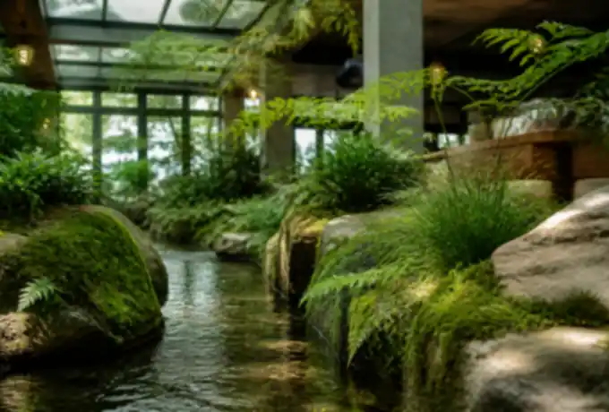
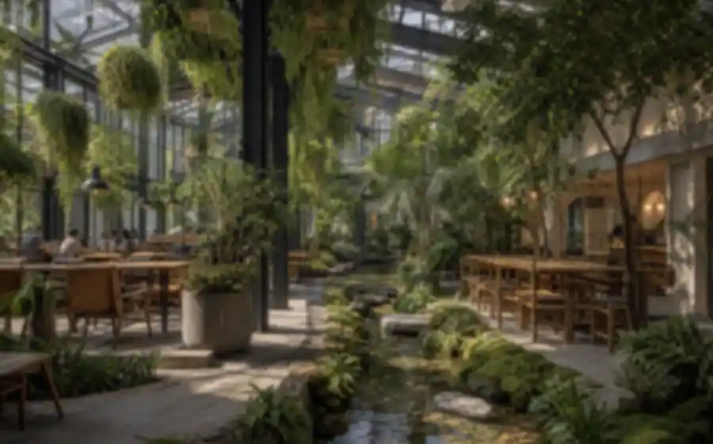
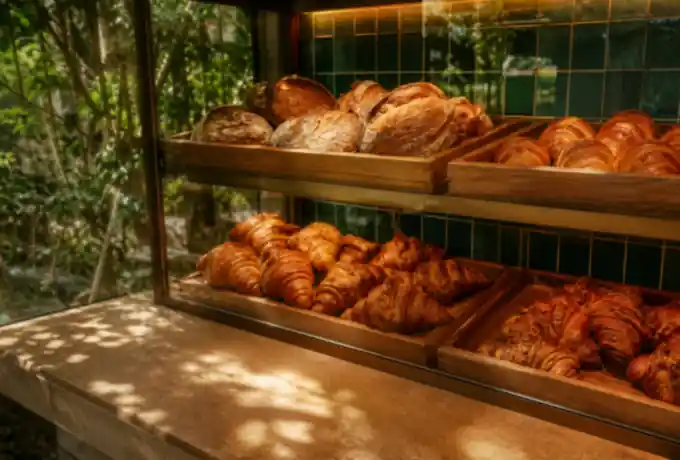
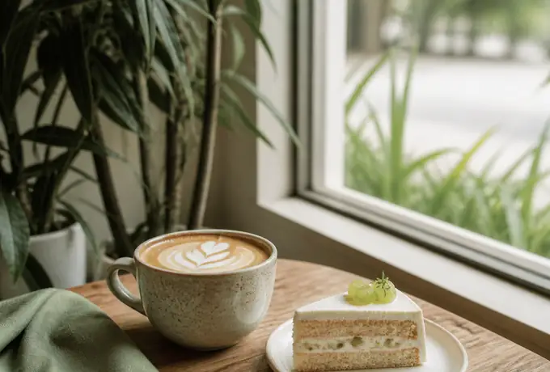
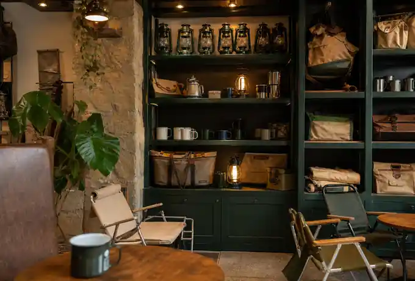
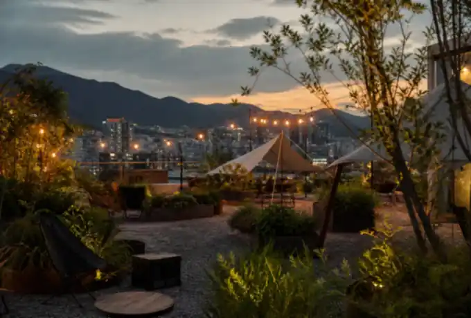
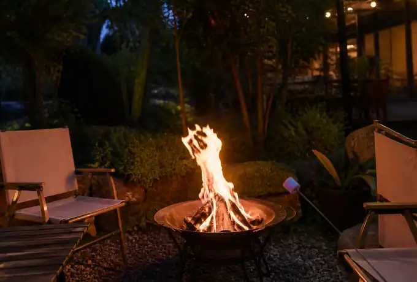

계곡이 흐르는 카페
통창과 실내 계곡, 긴 테이블. 주문은 1층에서 하고 자리는 어디든 좋습니다.


ISSUE 01 · YANGJU BAEKSEOK · SINCE 2023
자연과 함께하는 것을 소중히 여기고 즐길 줄 아는 사람들을 위한 캠핑 감성 브런치 카페.
SCROLL ↓
경기 양주시 백석읍 중앙로 138-47
A PLACE CALLED MOSSY
커다란 통창 너머로 초록이 쏟아지고, 1층 바닥에는 계곡이 흐릅니다. 자리에 앉으면 캠핑 의자, 옆에는 텐트. 빵 굽는 냄새와 커피 향이 층마다 이어집니다.
1·2층은 브런치 카페, 3층은 캠핑용품 편집샵, 4층은 루프탑 정원. 밤이 되면 정원의 화로에 불을 피워 앉아 있을 수 있습니다.
— 브런치 · 베이커리 · 캠핑 · 정원
01 — KITCHEN
수제 피자와 파스타, 필라프. 브런치는 19:30에 주문을 마감하고 15시에서 16시 사이에는 잠시 쉬어 갑니다.
가격은 2026년 9월 업체 공지 메뉴 기준입니다 · 변동될 수 있습니다

02 — BAKERY
소금빵, 크루아상, 초코롤, 잠봉뵈르. 그날 구운 빵이 그날 팔리고, 다 팔리면 마감입니다. 음료와 함께 가볍게 앉기 좋습니다.
베이커리 구성과 가격은 매일 달라집니다 · 매장 확인
03 — FLOORS
엘리베이터가 있어 유모차와 캐리어로도 층마다 오갈 수 있습니다.
통창과 실내 계곡, 긴 테이블. 주문은 1층에서 하고 자리는 어디든 좋습니다.

1층을 내려다보는 넓은 홀. 텐트석과 최대 12인 단체석이 있습니다.

랜턴, 화로대, 체어. 직접 앉아보고 고를 수 있는 아웃도어 매장입니다.

텐트와 캠핑 체어가 놓인 야외 정원. 불멍은 여기서, 해질 무렵이 가장 좋습니다.


04 — FIRE
장작과 화로대는 대여해 드립니다. 앉아서 불만 바라봐도 좋은 시간. 불멍 주문은 20:00에 마감합니다.
05 — GUIDE
06 — GALLERY
※ 갤러리 이미지는 인스타그램 @mossy.cafe 의 분위기를 참고해 만든 예시 이미지입니다. 실제 제작 시 매장 사진으로 교체됩니다.
07 — VISIT
경기 양주시 백석읍 중앙로 138-47
약도는 위치를 이해하기 위한 간략한 그림입니다.